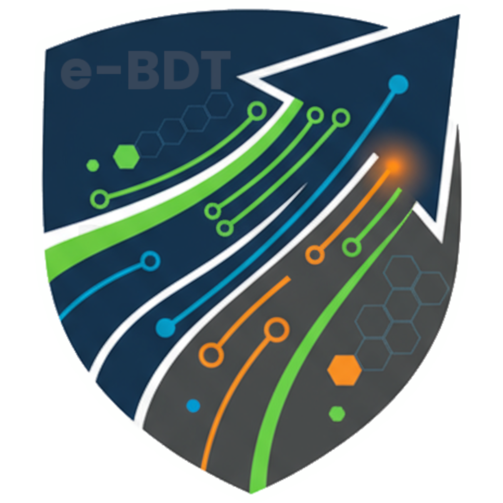

Política de Privacidade do e-BDT
Última atualização: 27 de Outubro de 2025
Bem-vindo à Política de Privacidade do aplicativo e-BDT ("Aplicativo"). Sua privacidade é importante para nós. Esta política explica como coletamos, usamos, compartilhamos e protegemos suas informações pessoais quando você utiliza nosso aplicativo móvel.
1. Informações que Coletamos
Para fornecer e melhorar os serviços do e-BDT, coletamos os seguintes tipos de informações:
- Informações de Identificação Pessoal: Nome, matrícula (ou outro identificador de login), informações da CNH (número, validade, categoria - fornecidas no cadastro ou perfil).
- Informações da Empresa: Código da empresa, nome da empresa, configurações de API e tema (cores, logos).
- Dados de Localização: Coordenadas GPS (latitude, longitude), velocidade, direção e timestamp. Importante: A coleta de dados de localização ocorre apenas enquanto um Boletim Diário de Transporte (BDT) estiver ativo e o serviço de rastreamento em segundo plano estiver em execução.
- Dados do Veículo: Identificação do veículo (ID, placa, modelo), quilometragem (inicial, final e em paradas), nível de combustível (inicial e final).
- Dados da Jornada (BDT): Horários de início e fim da jornada, detalhes das paradas (endereço, título, horários de chegada/partida, KM na chegada, status), distância percorrida, informações sobre pernoite, rotas percorridas (sequência de pontos GPS).
- Fotos e Mídia: Fotos de avarias do veículo (checklist inicial e finalização), fotos de comprovantes de abastecimento, fotos de comprovantes de despesas, fotos anexadas a relatórios de problemas.
- Dados de Despesas: Tipo de despesa, valor, data/hora, comprovante associado.
- Relatórios de Problemas: Categoria do problema, descrição, data/hora, foto associada (opcional).
- Comunicações: Mensagens e comunicados enviados pela Central/Gerência através do aplicativo.
- Credenciais de Acesso: Login e senha (são enviados diretamente para a API de autenticação da sua empresa e não armazenados por nós, exceto se você optar por salvar para login biométrico) e dados biométricos (gerenciados pelo sistema operacional do seu dispositivo e armazenados localmente de forma segura se habilitado).
- Informações do Dispositivo: Token de notificação push (FCM) para envio de Ordens de Serviço e Comunicados, informações básicas do dispositivo (modelo, sistema operacional) podem ser coletadas para fins de diagnóstico (ex: via Crashlytics).
- Dados de Uso (Potencial): Interações com o aplicativo (toques em botões, telas visitadas) podem ser coletadas de forma anônima para melhorar a usabilidade e identificar problemas.
2. Como Usamos Suas Informações
Utilizamos as informações coletadas para os seguintes propósitos:
- Operação do Serviço: Autenticar seu acesso, registrar e automatizar o preenchimento do BDT, calcular distâncias, monitorar a jornada de trabalho conforme exigido pela sua empresa.
- Comunicação: Enviar Ordens de Serviço, comunicados da gerência e notificações relevantes sobre a operação.
- Segurança e Conformidade: Registrar condições do veículo (checklist, avarias), documentar despesas, permitir o acionamento de alertas de segurança (Painel de Segurança) e cumprir requisitos operacionais e legais da sua empresa.
- Melhoria do Aplicativo: Analisar dados de uso (de forma anônima ou agregada) para identificar problemas, melhorar a interface e desenvolver novas funcionalidades.
- Suporte: Auxiliar na resolução de problemas técnicos ou operacionais que você possa reportar.
3. Compartilhamento de Informações
Suas informações são compartilhadas principalmente com:
4. Armazenamento e Segurança de Dados
Implementamos medidas de segurança técnicas e organizacionais para proteger suas informações contra acesso não autorizado, alteração, divulgação ou destruição.
- Armazenamento Local: Dados da sessão ativa, configurações, histórico de BDTs, fila de sincronização e preferências são armazenados no seu dispositivo usando SharedPreferences, Armazenamento Seguro (para dados sensíveis como credenciais biométricas e token de API) e SQFlite. O armazenamento é isolado por empresa quando aplicável.
- Armazenamento em Nuvem: Os dados finalizados do BDT, relatórios de problemas e atualizações de localização são enviados para os servidores da sua empresa empregadora. Configurações de empresa são buscadas de um servidor central (Maestro).
- Criptografia: Dados sensíveis armazenados localmente (credenciais) são criptografados. A comunicação com as APIs utiliza HTTPS.
Apesar de nossos esforços, nenhum sistema de segurança é impenetrável. Não podemos garantir a segurança absoluta das suas informações.
5. Dados de Localização em Segundo Plano
O e-BDT coleta dados de localização em segundo plano exclusivamente enquanto um BDT está ativo. Isso é essencial para automatizar o registro de trajetos e paradas, calcular distâncias e permitir a detecção automática de chegada (geofencing), mesmo quando o aplicativo não está visível na tela ou o dispositivo está bloqueado.
Uma notificação persistente será exibida enquanto o rastreamento estiver ativo, informando sobre a coleta de dados em segundo plano, conforme exigido pelas políticas das plataformas móveis.
O rastreamento de localização cessa completamente assim que o BDT é finalizado ou o serviço de background é interrompido.
6. Seus Direitos e Escolhas
Você tem certos direitos em relação às suas informações pessoais:
7. Retenção de Dados
Reteremos suas informações pessoais pelo tempo necessário para cumprir os propósitos descritos nesta política, para cumprir as obrigações contratuais com sua empresa empregadora e conforme exigido pelas leis e regulamentos aplicáveis.
O histórico de BDTs finalizados armazenado localmente no seu dispositivo pode ser gerenciado ou limpo por você, mas isso não afeta os dados já enviados para a Central da sua empresa.
8. Privacidade Infantil
O aplicativo e-BDT não se destina a menores de 18 anos e não coletamos intencionalmente informações pessoais de crianças.
9. Alterações nesta Política de Privacidade
Podemos atualizar esta Política de Privacidade periodicamente. Notificaremos sobre quaisquer alterações significativas publicando a nova política no aplicativo ou através de outros meios de comunicação. Recomendamos revisar esta política regularmente.